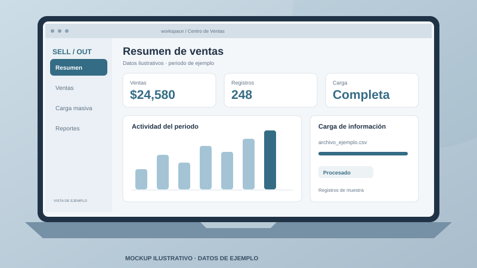

Soporte, mantenimiento, optimización y desarrollo de módulos
Participación en una plataforma de ventas de neumáticos mediante mejoras en la importación de archivos, validación de productos y herramientas de administración y reportes.

Mockup ilustrativo · Interfaz conceptual con datos de ejemplo, no es una captura real.
Descripción del proyecto
Plataforma utilizada por distribuidores para cargar archivos de ventas y convertir su contenido en registros consultables. La información permite identificar al vendedor, las características de los neumáticos y las cantidades vendidas, además de facilitar la revisión administrativa y la generación de reportes.
El sistema también permite comprobar la correspondencia de los códigos enviados por los distribuidores con el catálogo de referencia. Esta homologación distingue los productos reconocidos de aquellos cuyos códigos requieren revisión y sirve de apoyo para validar las ventas consideradas en el proceso administrativo.
Mi participación
Me incorporé cuando la plataforma ya estaba desarrollada. Participé en su soporte y mantenimiento, en la creación y modificación de módulos y en la optimización de la lectura de archivos de ventas.
También trabajé en un módulo administrativo para revisar el detalle de los archivos Excel cargados y consultar la homologación de los productos. Complementé estas tareas con atención a usuarios, capacitaciones a clientes y actualización de código en una máquina virtual alojada en AWS.
Aportaciones principales
Optimización del procesamiento de archivos de ventas.
Creación y modificación de funcionalidades administrativas.
Consulta del detalle de archivos cargados por los distribuidores.
Revisión de códigos homologados y no homologados.
Soporte, mantenimiento y capacitación de usuarios.
Actualización de módulos en el entorno alojado en AWS.
Tecnologías y recursos
Lenguajes
PHP
JavaScript
Base de datos
MySQL
Infraestructura
Máquina virtual en AWS
Formatos procesados
Excel
XML
Resultado destacado
En las cargas observadas, el tiempo de procesamiento pasó de aproximadamente 30 minutos a entre 3 y 5 minutos después de la optimización. Los archivos contenían alrededor de siete columnas y unos 500 registros o más.